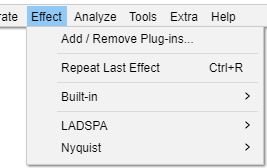

Effect Menu
| To apply an effect, select part or all of the track(s) you want to modify, and select the effect from the menu. |
- 
Using Effects
Titles which end in an ellipsis (...) will bring up a dialog asking you for more parameters.
All effects that have a dialog let you hear the audio as modified by the effect before you apply the effect to the waveform.
- Built-in effects and Nyquist plug-ins have a Preview button - press this to listen if the current effect settings produce what you want, and if not, change the settings then Preview again. Press to apply the effect to the waveform.
- All other effect types supported in Audacity (LADSPA, LV2, VST and Audio Units for Mac) support real-time preview - you can change the effect settings while listening then press to apply the effect to the waveform.
| Effects in the Effect menu that do not support real-time preview will appear grayed out when playing or recording. |
Add / Remove Plug-ins...
Selecting this option from the Effect Menu (or the Generate Menu or Analyze Menu) takes you to a dialog which enables you to load and unload Effects (and Generators and Analyzers) from Audacity. This enables you to customize your Effect Menu making it shorter or longer as required. For details see Add / Remove Effects, Generators and Analyzers.
By default all the Built-in effects, with the exception of Classic Filters, are loaded in Audacity.
See also this list of available Nyquist effect plug-ins on the Audacity Wiki, that you can easily download and add to Audacity.
Repeat Last Effect Ctrl +R
Using this command from the Effect menu will repeat the last effect that you used at the same settings. For quick access to the last used effect, you can use Ctrl + R to repeat it the same settings.
Audacity Built-in effects
Audacity's built-in effects (those that appear in the application irrespective of the contents of your Audacity and other "Plug-Ins" folders) are above the divider in the Effect menu.
Built-in effects support saving of user presets but do not yet support real-time preview or import/export of presets from/to other machines.
Find out more about the 'Audacity' submenu for built-in effects on the Effect Menu: Built-in page.
Nyquist effects
Nyquist plug-ins provide most of the optional effects underneath the divider in the Effect menu. They are also used to provide some of Audacity's built-in audio generators and analysis tools. A wide range of additional Nyquist effect, generation and analysis plug-ins can be obtained from Download Nyquist Plug-ins on our Wiki.
Nyquist effects support saving of user presets but do not yet support real-time preview or import/export of presets from/to other machines.
Find out more about the 'Nyquist' submenu for plug-in effects here.
LADSPA effects
LADSPA (Linux Audio Developer's Simple Plug-in API) plug-ins were originally developed for the Linux platform, but ports of some plug-ins are available for Windows and Mac as well. Most LADSPA plug-ins are effects, but they are also used to provide some of Audacity's built-in audio generators and can be used for audio analysis.
Additional LADSPA plug-ins can be downloaded for Windows, Mac and Linux. Please see the LADSPA section of the Download page on the Audacity Website for more details and links.
LADSPA effects support real-time preview. They do not support import/export of presets but do support saving presets for use in Audacity only. A few LADSPA plug-ins have an "Effect Output" section which is populated after the effect is applied.
Find out more about the 'LADSPA' submenu for plug-in effects here.
Audio Units (Mac only), are added by the operating system, macOS, on Apple Mac computers.
LV2 effects
LV2 is a more advanced evolution of the LADSPA plug-in architecture. Note that LV2 effects in Audacity cannot yet display a full graphical interface.
VST effects
Virtual Studio Technology (VST) is a software interface that integrates software audio synthesizer and effect plug-ins with audio editors and recording systems, such as Audacity.
Audio Unit effects (Mac only)
Audio Unit (AU) is a system-level plug-in architecture provided only on Mac computers.